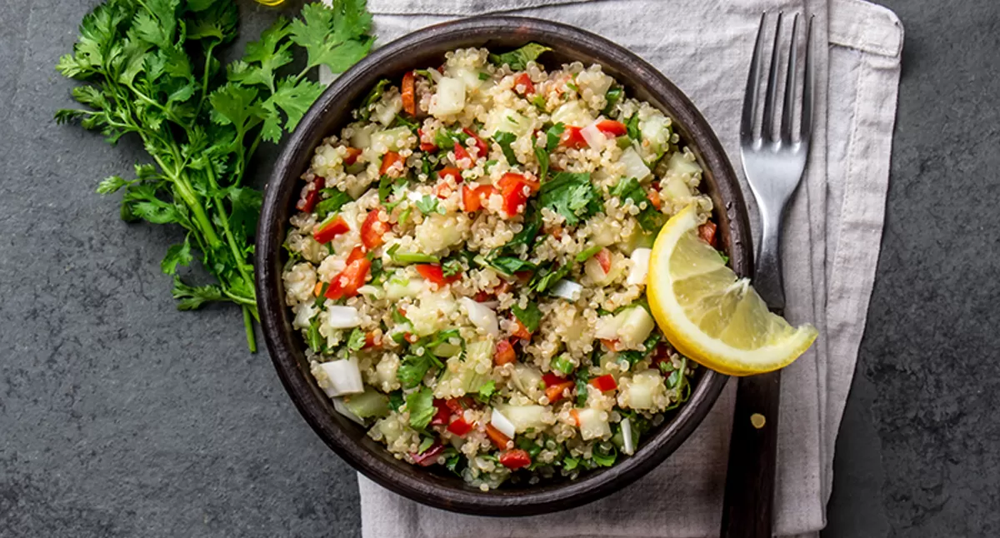

Lemon Salad Recipe
Home
Lemon Salad Recipe

What is a Lemon Salad?
it's exactly what it sounds like bozo ok
Ingredients:
- 2 Tablespoons of minced garlic
- Lemon juice from 1 lemon
- 1/2 teaspoon of L and P Worch Sauce
- 2 tablespoons of mayo
- Mix all of the ingredients in a bowl.
- Put in 4 ounces of Romaine and some Curley Parsley.
- Use a good zester to grate about 0.5 of Asiago cheese into the salad. A good zester is one where you literally don't have to put any effort into grating the cheese. They can be hard to find.
- Toss everything with your hand.